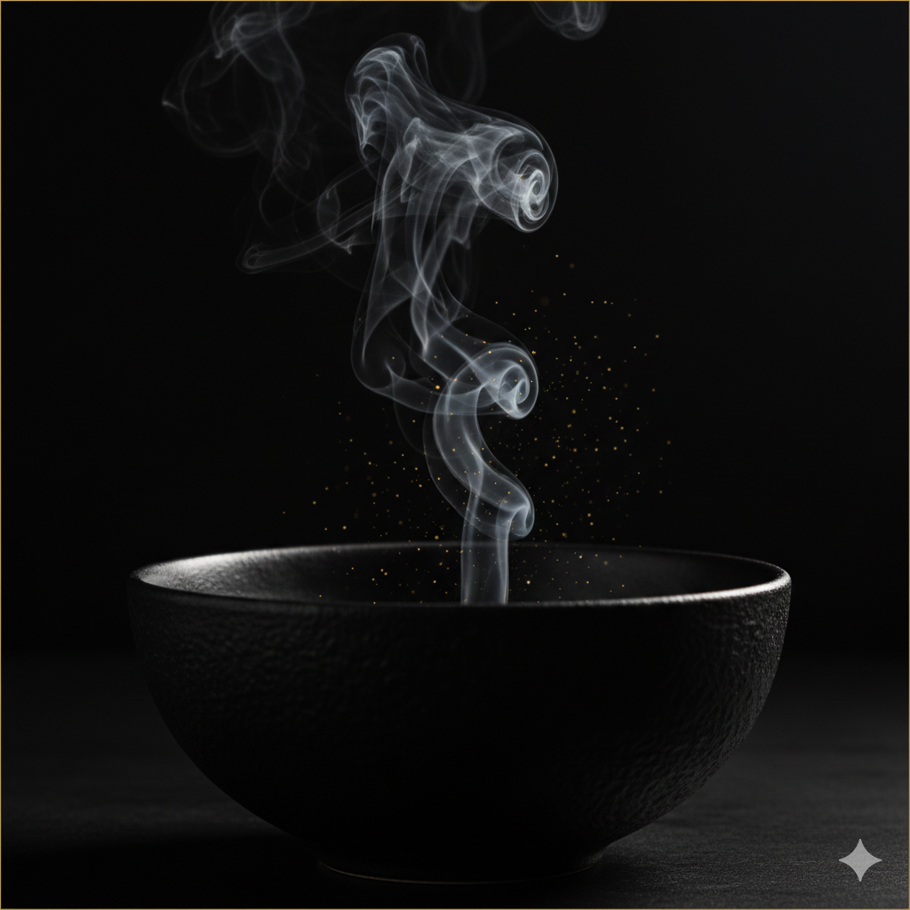

Consomé al Fuego de Encina
Caldo clarificado de huesos asados con esencia de jerez.
Vino: Palo Cortado (Tinto)
Un viaje al origen a través del fuego, los caldos intensos y la calma del invierno.

Caldo clarificado de huesos asados con esencia de jerez.
Corazones de alcachofa a la brasa con lascas de jamón ibérico.
Lomo de bacalao desalado con pil-pil y pimientos asados.
Pasta artesana rellena de rabo de toro estofado y su propio jugo.
Chocolate negro al 70% con helado de leche ahumada.
149 EUR por persona